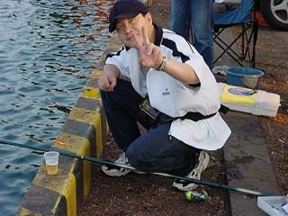
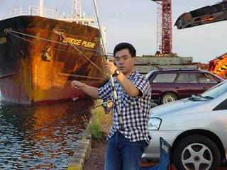
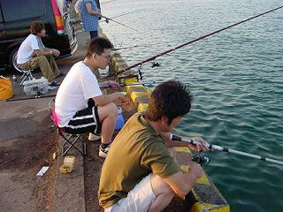
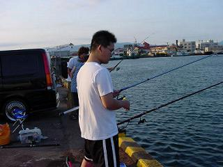

平成１３年度 上田市消防団第十六分団ラッパ班 水生生物調査部会
「直江津港における、魚類捕獲調査および海洋視察」 その１
ラッパ班の「魚類捕獲調査および海洋視察」、すっかり恒例になりました。いや、今回のメインテーマは「回転すしを腹いっぱい食らう会」かも？！
今年は「山の上のＯＢ」さんも現役当時からの念願叶ってご参加いただきました！ |
|  |
やっとのことで休暇をゲットしたＹくん。ゴキゲンです。 |
|  |
はるちゃん、出足快調！その後も着々と成果をあげていました。サスガ！ |
|  |
総務部長ね、＆～君の弾丸トークで車中一睡もできなかったんだって。かわいそー。 |
|  |
奥さん手作りの弁当を差し入れてくれた＆～君、ごちそーさん。
（ただし有償。金弐千円也だって。） |
≪前のページ |
次のページ≫ |